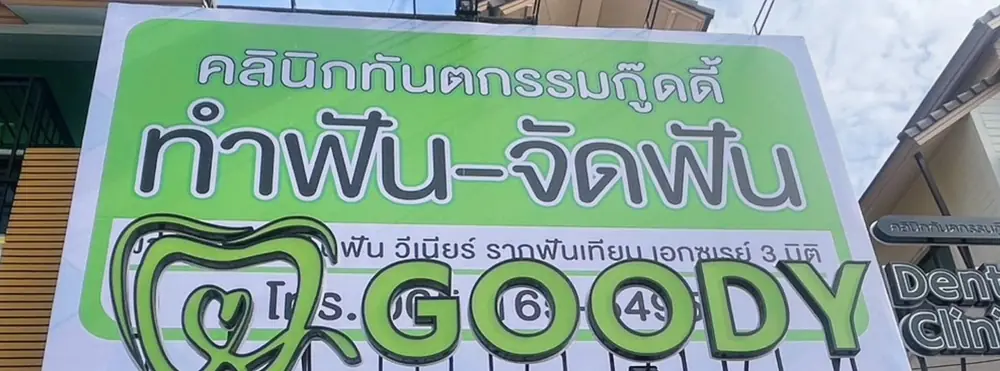

เหงือกร่น เกิดจากอะไร แปรงฟันแรงเกินไป โรคเหงือก หรือจัดฟัน
เหงือกร่น คือภาวะที่ขอบเหงือกเลื่อนต่ำลงจนเห็นคอฟันหรือรากฟันมากขึ้น ทำให้ฟันดูยาวขึ้นและอาจเสียวฟัน สาเหตุที่พบบ่อยมีหลายอย่าง เช่น แปรงฟันแรงหรือแปรงขนแข็ง โรคเหงือก (เหงือกอักเสบและปริทันต์อักเสบ) แรงสบฟันผิดปกติ ฟันซ้อนเก หรือผลจากการจัดฟัน เหงือกที่ร่นไปแล้วไม่งอกกลับเอง แต่ถ้าหาสาเหตุเจอและดูแลถูกวิธีก็ช่วยชะลอไม่ให้ร่นเพิ่มได้ ควรให้ทันตแพทย์ตรวจเพื่อดูว่าเป็นกรณีของคุณแบบไหน
เหงือกร่นดูอย่างไร สังเกตอาการเบื้องต้น
ลักษณะที่พบบ่อยของเหงือกร่น
- ฟันดูยาวกว่าเดิม หรือเห็นขอบสีเหลืองคล้ำตรงคอฟัน ซึ่งเป็นผิวรากฟัน
- เสียวฟันเมื่อโดนของเย็น ของร้อน หรือตอนแปรงฟัน
- รู้สึกเป็นร่องหรือรอยบากตรงคอฟันเวลาใช้เล็บลูบ
- เหงือกบางลงหรือมีรอยแหว่งเป็นรูปตัววีที่ฟันบางซี่
- ในบางรายมีเลือดออกขณะแปรง กลิ่นปาก หรือเหงือกบวมร่วมด้วย ซึ่งอาจเกี่ยวกับโรคเหงือก
อาการเสียวฟันจากเหงือกร่นมีรายละเอียดเฉพาะอยู่ในบทความเสียวฟัน ที่หน้านี้เน้นเรื่องสาเหตุของการร่น
สาเหตุของเหงือกร่น
| สาเหตุ | เกิดขึ้นได้อย่างไร | สิ่งที่มักทำ |
|---|---|---|
| แปรงฟันแรงหรือแปรงขนแข็ง | แรงถูซ้ำๆ ทำให้เหงือกบางลงและร่น มักพบที่ฟันเขี้ยวและฟันกรามน้อยด้านแก้ม | ปรับท่าแปรง ลดแรง ใช้แปรงขนนุ่ม |
| โรคเหงือก | การสะสมของคราบจุลินทรีย์และหินปูนทำให้เหงือกอักเสบ ถ้าลามถึงกระดูกรอบฟัน เหงือกและกระดูกจะลดลง | ขูดหินปูน ดูแลความสะอาด ติดตามโรคปริทันต์ |
| ลักษณะเหงือกบางและกระดูกบาง | บางคนมีเหงือกหรือกระดูกรอบฟันบางตามธรรมชาติ ร่นง่ายกว่า | ตรวจติดตามและป้องกันแรงกระทำ |
| อายุที่มากขึ้น | พบบ่อยในผู้สูงอายุ เพราะเหงือกผ่านการใช้งานและสะสมปัจจัยเสี่ยงมานาน | ตรวจฟันสม่ำเสมอ ดูแลซอกฟัน |
| ฟันซ้อนเกหรือฟันยื่นออกนอกแนว | ฟันที่อยู่นอกแนวมีกระดูกและเหงือกด้านแก้มบาง | ทันตแพทย์ประเมิน บางรายอาจปรึกษาเรื่องจัดฟัน |
| แรงสบฟันผิดปกติหรือนอนกัดฟัน | แรงกดซ้ำอาจสัมพันธ์กับการสึกและเหงือกร่นในบางราย (ยังมีข้อถกเถียงทางวิชาการ) | ตรวจการสบฟัน ดูบทความนอนกัดฟัน |
| การจัดฟัน | ถ้าฟันเคลื่อนออกนอกแนวกระดูกหรือเหงือกบางอยู่เดิม อาจเกิดเหงือกร่นได้ | ทันตแพทย์ประเมินก่อนและระหว่างจัดฟัน |
| การสูบบุหรี่หรือใช้ยาเส้น | สัมพันธ์กับโรคเหงือกที่รุนแรงขึ้นและการหายช้า | เลิกหรือลดการสูบ ตรวจเหงือกสม่ำเสมอ |
| หินปูนสะสมและการทำความสะอาดไม่ทั่วถึง | หินปูนระคายเหงือกและกันไม่ให้แปรงทำความสะอาดได้ถึง | ขูดหินปูนตามที่ทันตแพทย์แนะนำ |
| เจาะริมฝีปากหรือลิ้น | เครื่องประดับเสียดสีกับเหงือกบริเวณนั้น | ปรึกษาทันตแพทย์เรื่องการถอดหรือเลี่ยง |
แปรงฟันแรงเกินไป สังเกตอย่างไร และแปรงอย่างไรให้เหมาะ
สัญญาณที่อาจบอกว่าแปรงแรงเกินไป เช่น ขนแปรงบานเร็วภายในไม่กี่สัปดาห์ เหงือกแสบหรือเป็นรอยถลอก หรือมีร่องที่คอฟันด้านแก้ม แนวทางทั่วไปที่ทันตแพทย์แนะนำมีดังนี้
- ใช้แปรงขนนุ่ม หัวแปรงขนาดพอดีปาก และเปลี่ยนแปรงทุกประมาณ 3 เดือน หรือเมื่อขนบาน
- จับแปรงเบามือ ใช้นิ้วจับแบบปากกา ไม่กำแน่น แรงแค่พอให้ขนแปรงแตะผิวฟันและขอบเหงือก
- เอียงแปรงประมาณ 45 องศา ที่ขอบเหงือก ขยับเป็นวงกลมเล็กๆ หรือสั่นเบาๆ ไม่ถูไปมาแรงๆ
- ใช้เวลาประมาณ 2 นาที แปรงให้ทั่วทุกด้าน ดีกว่าแปรงสั้นๆ แต่แรง
- ทำความสะอาดซอกฟัน ด้วยไหมขัดฟันหรือแปรงซอกฟันขนาดที่พอดี อ่านเลือกแปรงซอกฟัน ไม่ใช้ไม้จิ้มฟันดันแรงๆ
- ถ้าสงสัยว่าแปรงผิดท่า ให้ทันตแพทย์หรือผู้ช่วยทันตแพทย์สาธิตการแปรงที่คลินิก
ไม่ควรเปลี่ยนไปแปรงเบาจนไม่สะอาด เพราะคราบที่เหลือทำให้เหงือกอักเสบได้ จุดสำคัญคือแปรงให้ทั่วและเบามือ
เหงือกร่นจากโรคเหงือก ต่างจากแปรงแรงอย่างไร
เหงือกร่นจากแปรงแรงมักพบเฉพาะบางซี่ที่โดนแปรงถูแรงเป็นประจำ เหงือกมักไม่บวมแดงและไม่มีหินปูนมาก ส่วนเหงือกร่นจากโรคเหงือกมักพบหลายตำแหน่ง มีเลือดออก เหงือกบวม กลิ่นปาก หินปูนเยอะ และอาจมีฟันโยกร่วมด้วย ต้องตรวจในช่องปากและเอกซเรย์ดูกระดูกรอบฟันจึงจะแยกได้ชัด ไม่ควรเดาเอง ถ้าสงสัยโรคเหงือก ควรทำความรู้จักอาการเหงือกอักเสบ และปรึกษาเรื่องการขูดหินปูน
เหงือกร่นกับการจัดฟัน
การจัดฟันคือการเคลื่อนฟันผ่านกระดูกและเหงือก หากเหงือกหรือกระดูกด้านแก้มบางอยู่เดิม ฟันที่ถูกเคลื่อนออกนอกแนวอาจมีเหงือกร่นได้ ทันตแพทย์จะประเมินความหนาของเหงือกและแนวฟันก่อนวางแผน และระหว่างจัดฟันต้องทำความสะอาดรอบเครื่องมือให้ดี เพราะเหงือกอักเสบเป็นอีกปัจจัยที่ทำให้ร่นได้ ถ้าสนใจเรื่องจัดฟันดูหน้าการจัดฟัน [บริการนี้ รอคลินิกยืนยัน]
ปล่อยเหงือกร่นไว้ไม่ดูแล เสี่ยงอะไรบ้าง
ผิวรากฟันที่โผล่ขึ้นมาไม่ได้แข็งแรงเท่าส่วนตัวฟันที่มีเคลือบฟันห่อหุ้ม จึงเสียวง่ายและผุง่ายกว่า ถ้าสาเหตุเดิมยังอยู่ โดยเฉพาะโรคเหงือก การร่นอาจเพิ่มขึ้นจนกระดูกรอบฟันลดลง ฟันโยก และในระยะยาวอาจสูญเสียฟันได้ ผู้ที่เห็นความเปลี่ยนแปลงแม้เพียงเล็กน้อยจึงควรให้ทันตแพทย์ดูตั้งแต่ต้น [7]
เหงือกร่นรักษาได้ไหม
เหงือกที่ร่นไปแล้วไม่งอกกลับมาเอง ทางเลือกขึ้นกับสาเหตุและความรุนแรง ต้องให้ทันตแพทย์ประเมิน
- เหงือกร่นเล็กน้อยและไม่มีอาการ มักเน้นแก้สาเหตุ ปรับวิธีแปรง ทำความสะอาดให้ดี และติดตามเป็นระยะ
- เสียวฟันจากคอฟันเผย ทันตแพทย์อาจแนะนำยาสีฟันสำหรับฟันเสียว การเคลือบน้ำยาลดเสียว หรืออุดคอฟัน ดูหน้าข้อมูลอุดฟัน
- มีโรคเหงือกร่วม ต้องรักษาโรคเหงือกก่อน เช่น ขูดหินปูนและเกลารากฟัน คือทำความสะอาดผิวรากฟันใต้เหงือก [7]
- ฟันเกหรือฟันหมุนผิดแนว ทันตแพทย์อาจพิจารณาการจัดฟันเพื่อปรับตำแหน่งฟันเป็นส่วนหนึ่งของแผน [7]
- ร่นมากหรือรบกวนความสวยงาม บางรายทันตแพทย์ปริทันต์อาจเสนอการผ่าตัดปลูกเหงือกหรือเสริมเหงือก ซึ่งต้องประเมินรายบุคคล เป็นวิธีที่แหล่งข้อมูลทางการแพทย์ระบุว่าคาดเดาผลได้ค่อนข้างดีและอยู่ได้นานสำหรับเหงือกร่นที่เป็นมาก โดยทั่วไปใช้เวลาพักฟื้นราวสองสัปดาห์ [7] [บริการปลูกเหงือก รอคลินิกยืนยัน]
ข้อควรรู้เรื่องความเสี่ยง การผ่าตัดเหงือกอาจมีเลือดออก บวม เจ็บแผล แผลติดเชื้อ หรือผลทางความสวยงามไม่เป็นไปตามคาด การรักษาแต่ละแบบไม่ได้ให้ผลเท่ากันในทุกคน และเหงือกอาจร่นซ้ำถ้าสาเหตุเดิมยังอยู่ ค่าใช้จ่าย [ราคา รอคลินิกยืนยัน] ทันตแพทย์จะแจ้งหลังตรวจก่อนเริ่มรักษา
วิธีป้องกันไม่ให้เหงือกร่นเพิ่ม
- แปรงฟันเบามือด้วยแปรงขนนุ่ม และไม่ถูไปมาแรงๆ
- ทำความสะอาดซอกฟันทุกวัน เพื่อไม่ให้เหงือกอักเสบ
- ไปตรวจฟันและขูดหินปูนตามที่ทันตแพทย์นัด
- เลิกหรือลดการสูบบุหรี่
- ถ้านอนกัดฟัน ให้ปรึกษาเรื่องเฝือกสบฟัน
- ถ้าจัดฟัน ให้ไปตามนัดและทำความสะอาดรอบเครื่องมือเป็นพิเศษ
อาการแบบไหนควรรีบพบทันตแพทย์
ควรนัดพบทันตแพทย์ภายในไม่กี่วันถึงไม่กี่สัปดาห์ ถ้ามีอาการต่อไปนี้
- เหงือกร่นเร็วขึ้นหรือร่นหลายซี่
- เหงือกบวมแดง มีเลือดออกบ่อย หรือมีกลิ่นปากเรื้อรัง
- ฟันโยก หรือรู้สึกว่าฟันห่างขึ้น ดูฟันโยก
- เสียวฟันมากจนกินหรือแปรงฟันไม่ได้
- มีหนองที่ขอบเหงือก หรือเหงือกบวมเป็นก้อน
ถ้ามีไข้ ใบหน้า ใต้คาง หรือคอบวมลาม ตาบวม อ้าปากไม่ได้ กลืนหรือหายใจลำบากร่วมกับอาการเหงือกบวม ให้ไปห้องฉุกเฉินทันทีหรือโทร 1669 ไม่ควรขับรถไปเอง
สิทธิการรักษาและค่าใช้จ่าย
- ประกันสังคม: การขูดหินปูนอยู่ในวงเงิน 900 บาทต่อปีที่คลินิกเอกชนที่ทำความตกลง การรักษาเหงือกร่นโดยตรงไม่อยู่ในสิทธิพื้นฐานนี้ ดูหน้าประกันสังคม ขูด อุด ถอน [รอยืนยันกับคลินิก]
- บัตรทอง: ผู้มีสิทธิบัตรทองรับบริการตรวจฟัน ขูดหินปูน อุดฟัน ถอนฟัน เคลือบหลุมร่องฟัน และเคลือบฟลูออไรด์ ที่คลินิกทันตกรรมเอกชนที่ร่วมโครงการ 30 บาทรักษาทุกที่ได้ปีละไม่เกิน 3 ครั้ง โดยไม่ต้องร่วมจ่าย ตรวจสิทธิล่าสุดกับ สปสช. (สายด่วน 1330) คลินิกร่วมโครงการหรือไม่ [รอยืนยันกับคลินิก] ดูหน้าทำฟันด้วยบัตรทอง
- ค่าตรวจ ขูดหินปูน และรักษาเหงือกร่นที่คลินิก: [ราคา รอคลินิกยืนยัน]
ปรึกษาที่คลินิกทันตกรรมกู๊ดดี้ หนองปรือ พัทยา
ถ้าเห็นว่าฟันยาวขึ้น เสียวคอฟัน หรือเหงือกบวมเลือดออก ทัก LINE หรือโทรหาคลินิกทันตกรรมกู๊ดดี้เพื่อสอบถามคิวตรวจได้ แจ้งอาการคร่าวๆ เช่น เป็นที่ซี่ไหน เป็นมานานเท่าไหร่ แปรงฟันด้วยแปรงชนิดไหน เพื่อให้คลินิกจัดคิวได้เหมาะสม
- LINE: @goodydentalclinic
- โทร: 065-165-5495
- เวลาเปิด: จันทร์ถึงศุกร์ 10:00 ถึง 20:00 น. เสาร์และอาทิตย์ 09:30 ถึง 20:00 น. [รอยืนยันกับคลินิก] ดูแผนที่เดินทางมาคลินิก
คำถามที่พบบ่อย
เหงือกร่นแล้วจะงอกกลับมาได้ไหม
เหงือกที่ร่นไปแล้วไม่งอกกลับมาเองตามธรรมชาติ แต่ถ้าแก้สาเหตุ เช่น ปรับวิธีแปรงและรักษาโรคเหงือก ก็ช่วยชะลอไม่ให้ร่นเพิ่มได้ ส่วนการผ่าตัดเสริมเหงือกต้องให้ทันตแพทย์ประเมินเป็นรายบุคคล
เหงือกร่นเกิดจากแปรงฟันแรงอย่างเดียวหรือเปล่า
ไม่ใช่อย่างเดียว แปรงแรงเป็นสาเหตุที่พบบ่อย แต่ยังเกิดจากโรคเหงือก ลักษณะเหงือกบาง ฟันซ้อนเก การสบฟัน การสูบบุหรี่ และการจัดฟันได้ ทันตแพทย์ต้องตรวจเพื่อดูว่าเป็นสาเหตุใด
ปล่อยเหงือกร่นไว้เฉยๆ อันตรายไหม
อาจเสี่ยงฟันผุที่รากฟัน เสียวฟันมากขึ้น และถ้ามีโรคเหงือกอยู่ด้วย กระดูกรอบฟันอาจลดลงจนฟันโยกได้ ไม่ได้หมายความว่าทุกคนที่เหงือกร่นเล็กน้อยจะเป็นแบบนั้น แต่ควรให้ทันตแพทย์ตรวจและติดตามดู
เหงือกร่นแต่ไม่เสียวฟัน ต้องไปหาหมอไหม
ควรไปตรวจ แม้ไม่เสียวฟันก็ตาม เพราะเหงือกร่นอาจเป็นสัญญาณของโรคเหงือกหรือการแปรงผิดวิธี ทันตแพทย์จะช่วยดูว่าควรติดตามอย่างเดียวหรือต้องรักษา ยิ่งตรวจเร็ว ยิ่งป้องกันไม่ให้ร่นเพิ่มได้ง่ายกว่า
จัดฟันแล้วเหงือกร่นได้ไหม
เกิดขึ้นได้ในบางราย โดยเฉพาะคนที่เหงือกหรือกระดูกด้านแก้มบางอยู่เดิมหรือฟันซ้อนเกมาก ทันตแพทย์จะประเมินก่อนจัดฟัน และการทำความสะอาดรอบเครื่องมือให้ดีช่วยลดความเสี่ยงจากเหงือกอักเสบ
ผู้สูงอายุเหงือกร่นง่ายกว่าจริงไหม
พบเหงือกร่นได้บ่อยขึ้นตามอายุ แต่ไม่ได้เกิดจากอายุอย่างเดียว การแปรงแรง โรคเหงือก และการสูบบุหรี่ที่สะสมมานานก็มีส่วน การดูแลซอกฟันและตรวจฟันสม่ำเสมอช่วยลดความเสี่ยงได้ในทุกวัย
ยาสีฟันลดเสียวฟันช่วยเหงือกร่นได้ไหม
ยาสีฟันสำหรับฟันเสียวอาจช่วยลดอาการเสียวจากคอฟันเผยในบางคน แต่ไม่ได้ทำให้เหงือกกลับมาและไม่ได้แก้สาเหตุของการร่น ถ้ายังเสียวหรือเหงือกร่นต่อ ควรพบทันตแพทย์
แหล่งอ้างอิง
- NHS. Gum disease. https://www.nhs.uk/conditions/gum-disease/
- American Dental Association, MouthHealthy. Gum Disease. https://www.mouthhealthy.org/all-topics-a-z/gum-disease
- American Dental Association, MouthHealthy. Brushing Your Teeth. https://www.mouthhealthy.org/all-topics-a-z/brushing-your-teeth
- American Dental Association, MouthHealthy. Flossing. https://www.mouthhealthy.org/all-topics-a-z/flossing
- American Dental Association, MouthHealthy. Sensitive Teeth. https://www.mouthhealthy.org/all-topics-a-z/sensitive-teeth
- NHS. Dental abscess. https://www.nhs.uk/conditions/dental-abscess/
- Cleveland Clinic. Gum Recession: Causes, Prevention, Surgery & Treatment. https://my.clevelandclinic.org/health/diseases/22753-gum-recession
ข้อมูลในบทความนี้เป็นความรู้ทั่วไป ไม่ใช่การวินิจฉัยหรือแทนการตรวจโดยทันตแพทย์ สาเหตุและการรักษาที่เหมาะสมต้องประเมินจากการตรวจในช่องปากและเอกซเรย์
อ่านต่อและบริการที่เกี่ยวข้อง
จองคิวตรวจกับทันตแพทย์ หนองปรือ พัทยา
คลินิกทันตกรรมกู๊ดดี้ Goody Dental Clinic222/20 ถ.พรประภานิมิต ต.หนองปรือ อ.บางละมุง จ.ชลบุรี 20150
ใกล้สี่แยกมิตรกมล มีที่จอดรถหน้าคลินิก
เปิดทุกวัน ถึง 20.00 น.
| จันทร์ถึงศุกร์ | 10.00 ถึง 20.00 น. |
|---|---|
| เสาร์ อาทิตย์ | 09.30 ถึง 20.00 น. |

ทัก LINE บอกอาการและสิทธิที่จะใช้ เจ้าหน้าที่หาคิวให้ หรือโทรถามได้ในเวลาทำการ